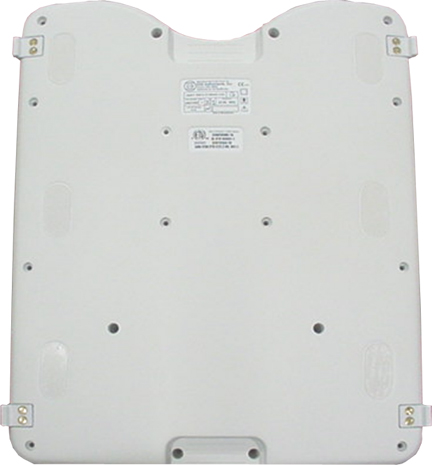
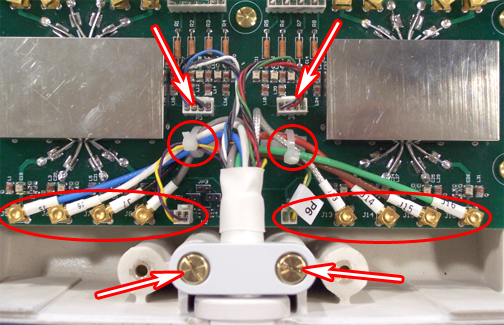

Operating Documentation
Direction 5500113, Rev# 3
Discovery MR750 3.0T Service Methods
Module Version 2.0, Version Date 1/5/09
Operating Documentation |
| Required Persons | Preliminary Reqs | Procedure | Finalization |
|---|---|---|---|
| 1 | Not Applicable | 45 mins | Not Applicable |
| Item | Qty | Effectivity | Part# | Manufacturer | |
|---|---|---|---|---|---|
| Standard Tool Set | 1 | - | - | - | |
| Item | Qty | Effectivity | Part# | Manufacturer |
|---|---|---|---|---|
| Nylon cable ties (2) | 1 | - | - | - |
| Item | Qty | Effectivity | Part# | Manufacturer | |
|---|---|---|---|---|---|
| FRU Output Cable Assembly, 3T Breast Coil | 1 | - | 2417366 | - | |
Place coil bottom side up. See Illustration 1.
Illustration 1: Coil Bottom Side Up

Remove all screws (18).
Remove the cable from the coil.
Remove the 2 cable ties. See Illustration 2.
Illustration 2: Cable Connections

Disconnect all 8 RF cables and 4 DC cables. See Illustration 2.
Remove cable clamp from the coil.
Remove cable assembly.
Install the new cable:
Attach the new cable assembly by sliding the strain relief of the cable into the cutout of the housing, with its round section towards the bottom. Press the strain relief down firmly, so the edge of the housing fits into the groove of stain relief nicely.
Reinstall the cable clamp.
Install all channel connections (8 coaxial and 4 DC connectors) by matching the designators on the cable with the designators on the PCB. Tie cables J5, J6, J7, J8, and P5 to the left cable tie holder on the PCB. Tie cables J13, J14, J15, J16, and P6 to the right cable tie holder. Route the cables as shown in the picture, so none of them touches the rectangular shield. Cables P3 and P4 should not be tied.
Reinstall the coil cover.
No finalization steps.